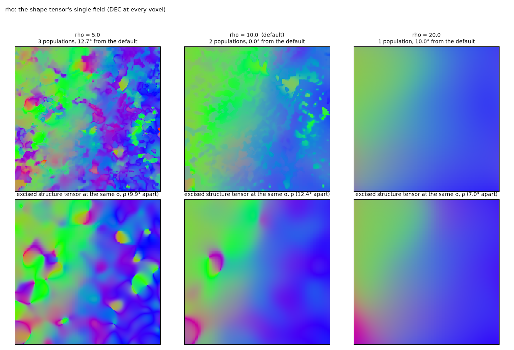
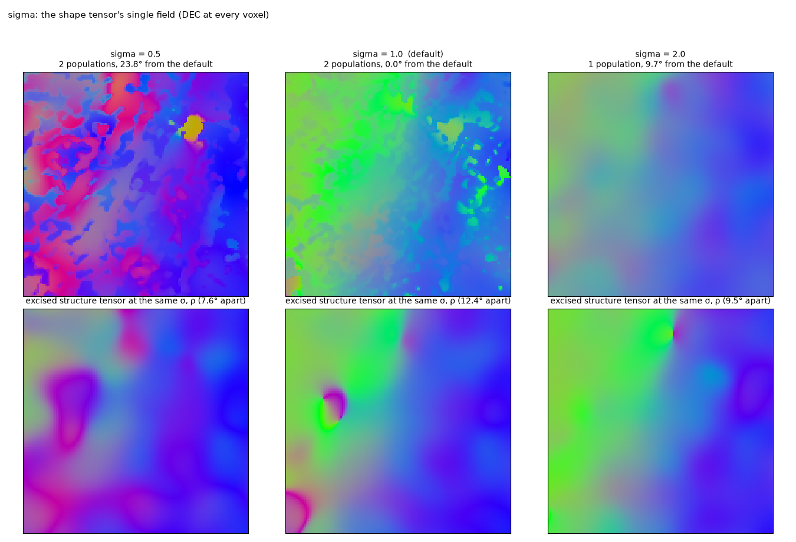
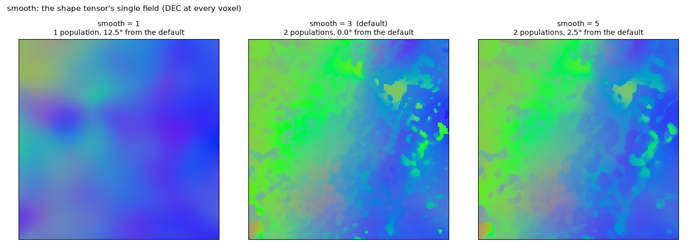
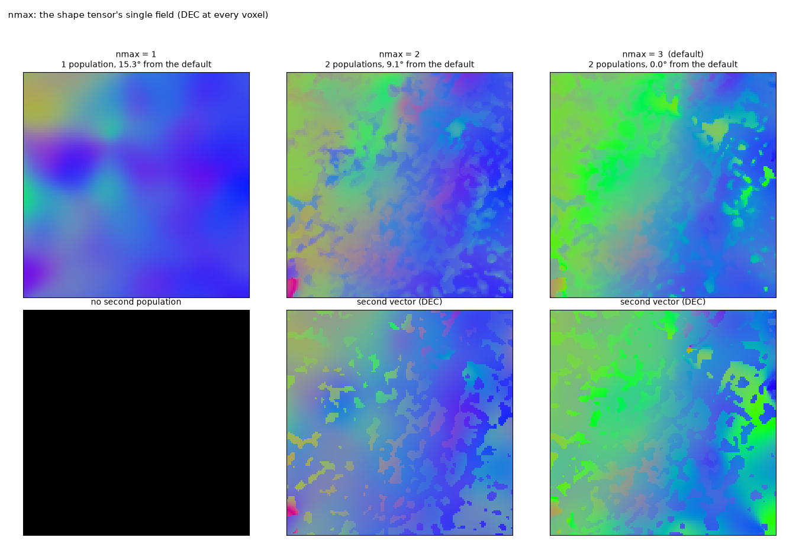
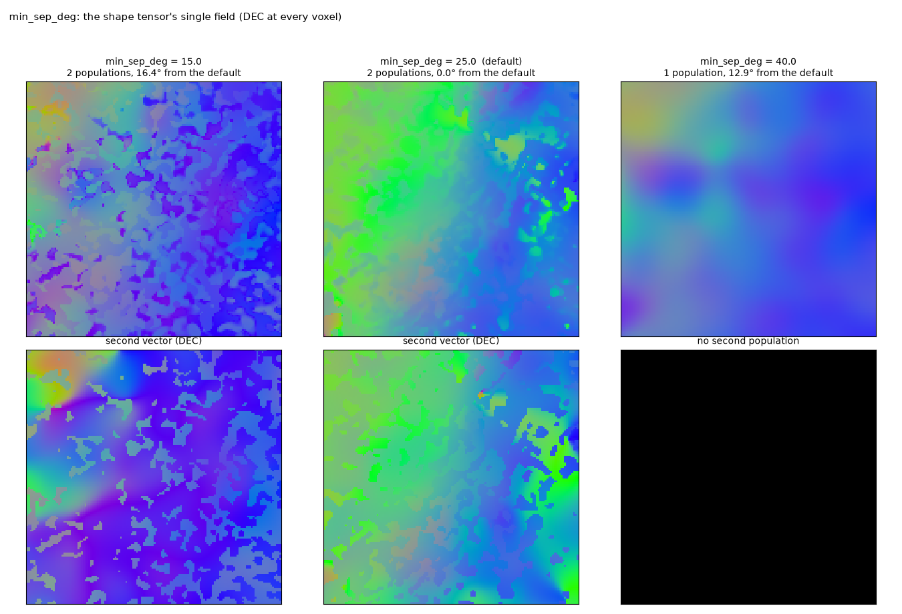
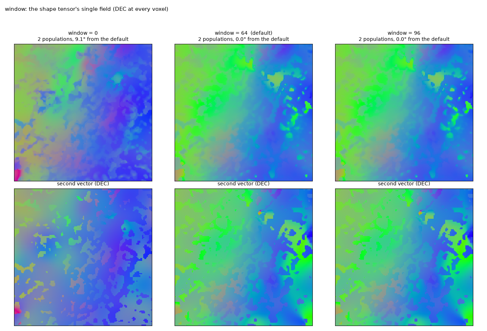
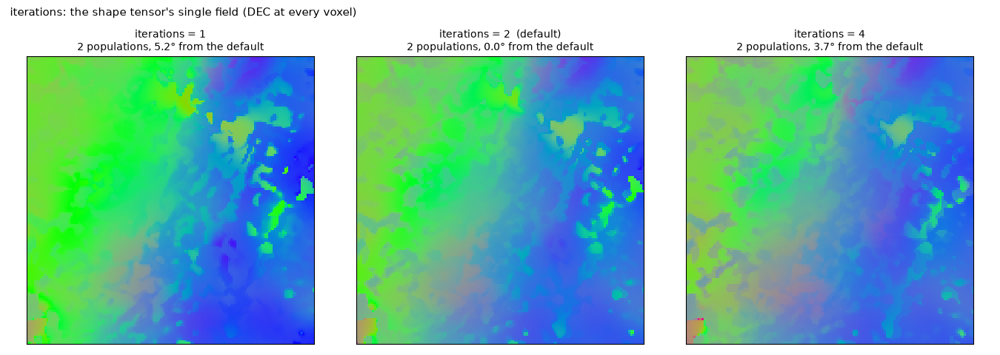
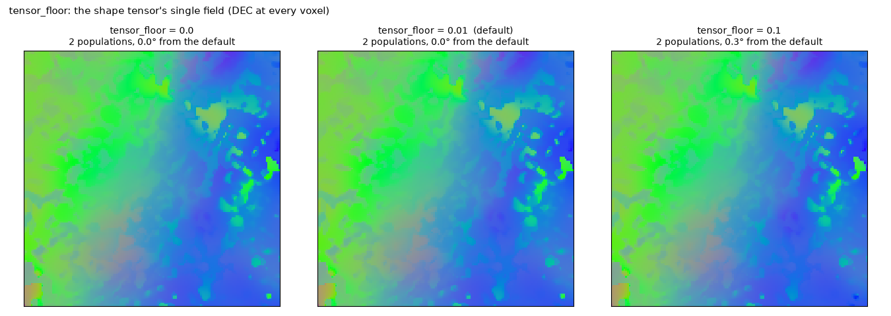
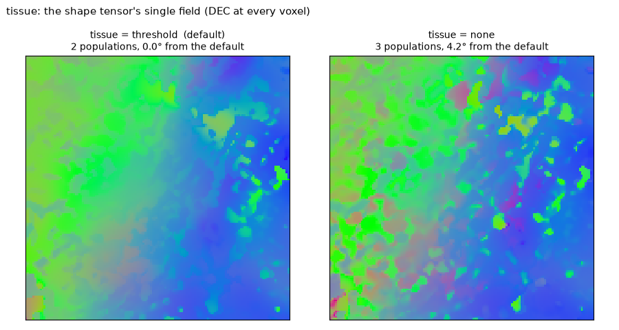

Parameters¶
What each parameter does to the field, one at a time, on the HiP-CT block of real data (S-21-46, 20 µm, a 192³ block calibrated on the 384³ around it), the rest at their defaults. Every strip shows the shape tensor's single field as DEC colour (R = |x|, G = |y|, B = |z|) at every voxel. The titles give the populations found and the median angle of the field from the default run's over the tissue.
python scripts/parameters.py # docs/img/params_<name>.png, results/parameters.jsonTwo things are not parameters: the feature layer (encoder block 2 of anatomix, the layer where orientation is a
linear code) and the teacher (the excised structure tensor at the output rho). Changing the scale at which the
shape is read means resampling the image; see the pipeline.
What the strips show overall: the field's direction is set by the scales and by which populations are found, and by nothing else. The weight floor and the sub-window size leave it unchanged; a different population count or a different pair of populations moves it by 9–16° at the median on this low-coherence block, where several readings of the tissue are plausible. The readout's fit is not bit-reproducible on the GPU, so the exact populations a run finds, and these numbers, vary a little between runs.
The scales: rho and sigma¶
rho is the integration window of every tensor: the teacher, each population's tensor and the baseline structure
tensor. It is the one scale a user should normally touch. Smaller windows follow the fibres more closely and carry
more noise (the structure tensor's swirl defects at ρ 5, three populations found); larger ones smooth the field and
blur crossings and bends further. The bottom row is the excised structure tensor at the same rho: the two fields
move together, which is what makes the comparison like for like. At ρ 20 the teacher is smoother than the fascicles
of this block and one population is found.

sigma is the derivative scale. At half a voxel the gradients see the noise and the teacher, and so the field,
change character (24° from the default); at two voxels the fibre texture (period about 5 voxels at 20 µm) is
blurred before it is differentiated, every tensor loses contrast and one population is found.

The feature average: smooth¶
The features are box-averaged over smooth³ voxels before the readers are fitted and before the activations are
thresholded for the tissue mask. The activation of a rectified filter oscillates with the phase of the fibre
texture; a 3³ average (the default) integrates it. Without it the activations spike voxel by voxel, the null is
lower and the second population is not confirmed; a 5³ box blurs the layers at the scale of the box and leaves the
field within 3° of the default.

Finding the populations: nmax, min_sep_deg, window, iterations¶
These decide how many populations the block is unmixed onto, not how any tensor integrates. The top row is the single field; the bottom row is the second vector of the multi-vector field with its activation as brightness, black where only one population was found.
nmax caps the number of populations. With one population the single field is the excised structure tensor
weighted by that population's activation (15° from the default here). With two the block has two readings that
differ by 9°: the default (candidates from the 64³ sub-windows, up to three confirmed) and the pair found with
nmax 2 or window 0, which is the same pair.

min_sep_deg is the angle below which two candidate populations are the same one. Smaller values let the
shoulders of one dispersed population count as two (at 15° a different pair is found, 16° from the default); at
40° the two populations of this block are merged into one.

window is the size of the sub-windows in which candidate populations are looked for, 0 for the block only. A
population confined to one region of the block is found through its sub-window; 64 and 96 give the same result here.

iterations is the number of joint refinements of the populations from their own layers after the candidates are
confirmed one by one. One pass or four leave the field within 4–5° of the default on this block.

Little or no effect on the field: tensor_floor, tissue¶
tensor_floor is the weight floor of every population tensor, as a fraction of the null. It keeps a population's
tensor defined where its activation is zero and is not a lever on the field (0.3° between 0 and 0.1; also
notes/results_log.md §27).

tissue is the optional mask of the voxels to read (here the grey level above the air/tissue threshold). It
chooses where the teacher is sampled and where the excision looks for steps; it is never applied to the vectors,
and on a block that is all tissue it changes the field by 4°.
